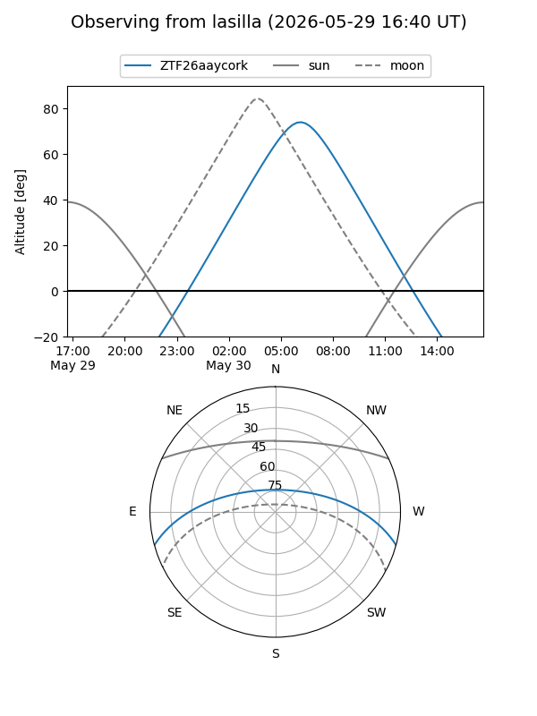
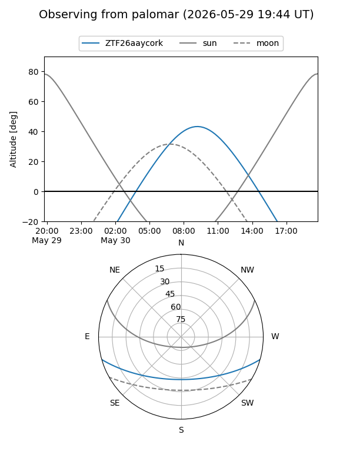

ZTF26aaycork
Target ZTF26aaycork at 2026-05-29 12:16
Aliases and brokers:
lsst-FINK: link
lsst-Lasair: link
lsst-ALeRCE: link
ztf-FINK: link
ztf-Lasair: link
ztf-ALeRCE: link
alt names
ZTF26aaycork (ztf,fink_ztf)
Coordinates:
equatorial (ra, dec) = 268.5015,-13.34816
equatorial (HMS+DMS) = 17:54:00.36,-13:20:53.37
galactic (l, b) = (14.4264,+6.28446)
Flags:
Photometry:
last ztfg=17.35
2 ztfg detections
Lightcurve
Visibility


Additional plots